primera pagina web
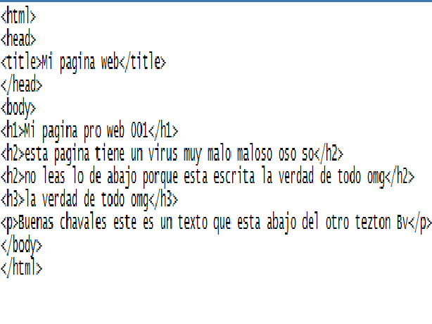 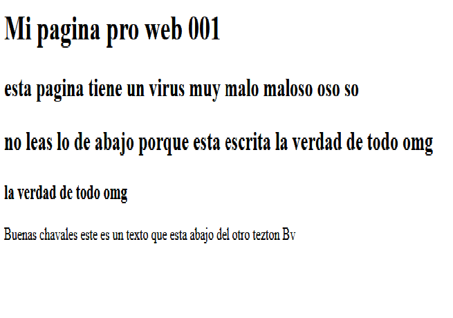segunda pagina web: aprendimos a usar el codigo html y cambar al idioma español.
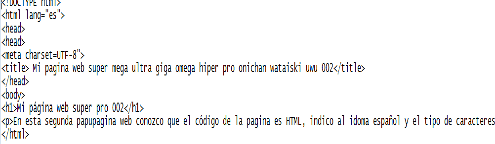 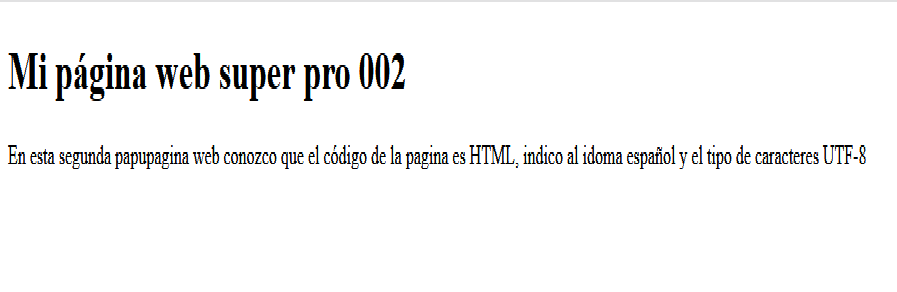tercera pagina web: tipos de fuentes po´
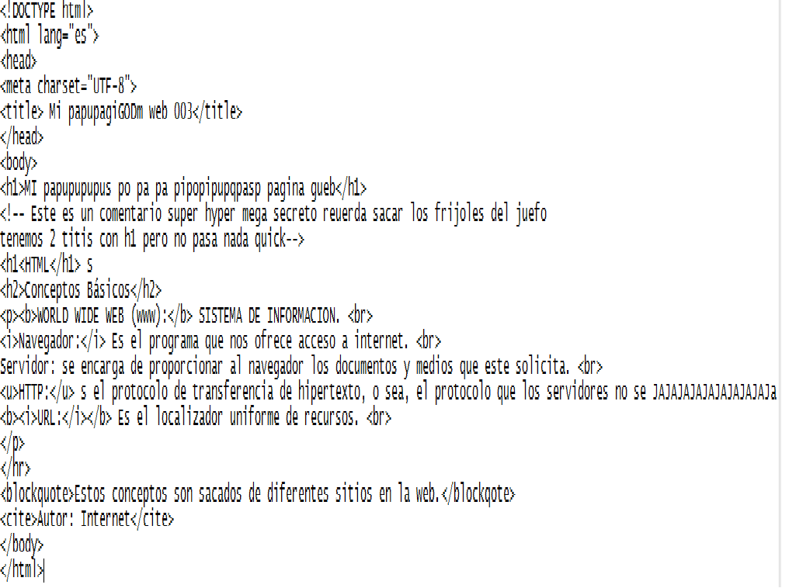 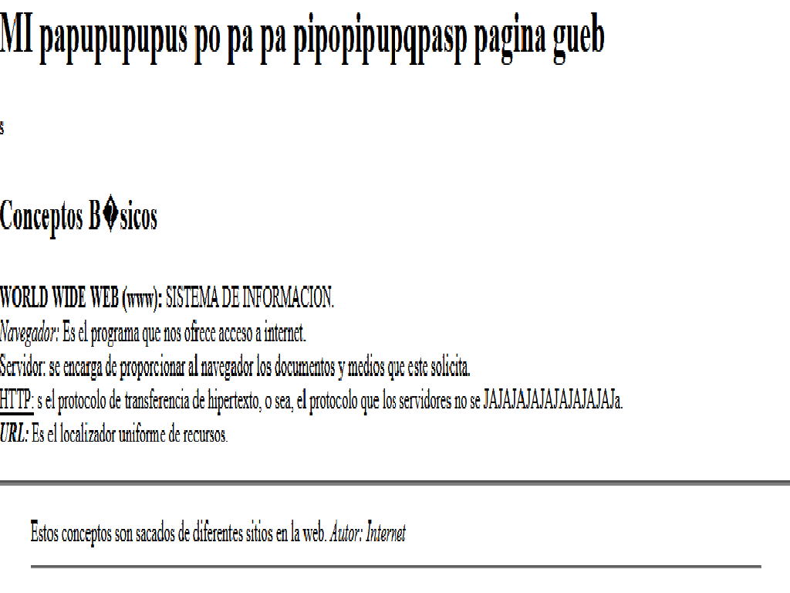cuarta pagina web: aprendimos a utilizar las listas
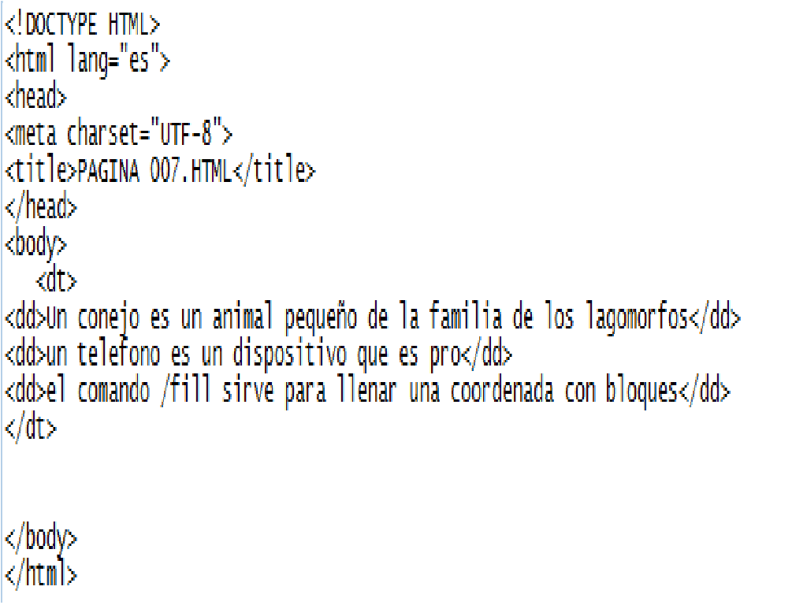 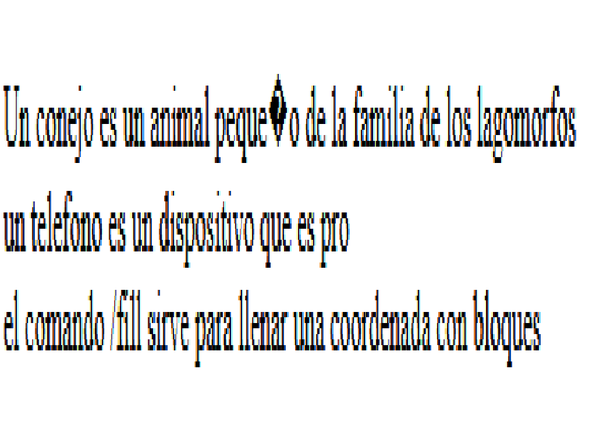quinta pagina web: aprendimos a hacer tablas
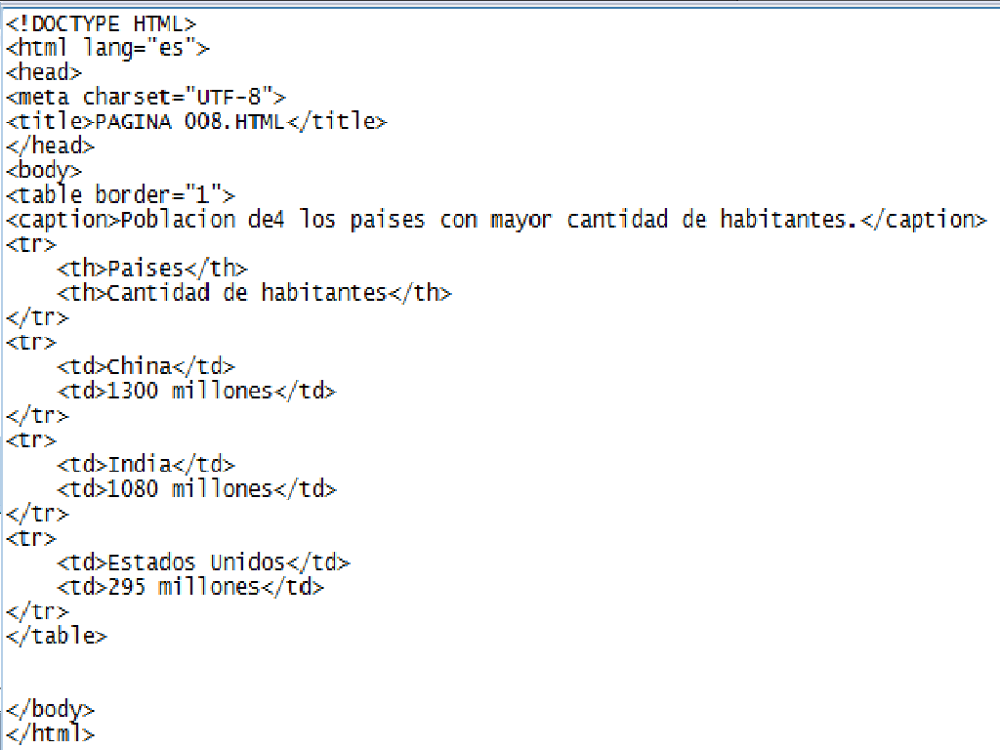 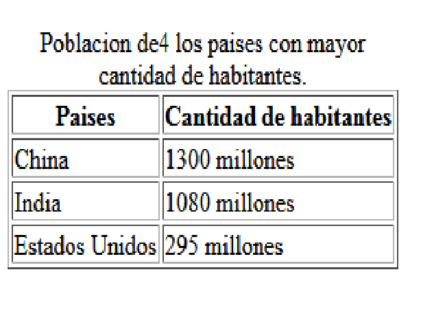sexta pagina web: tablas 2.0
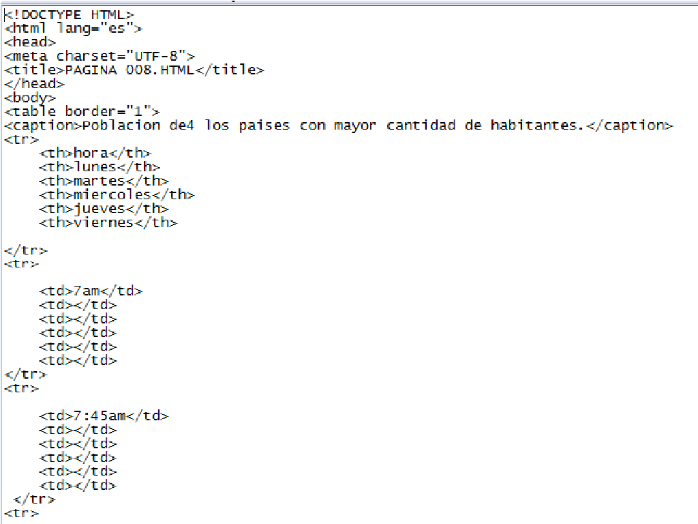 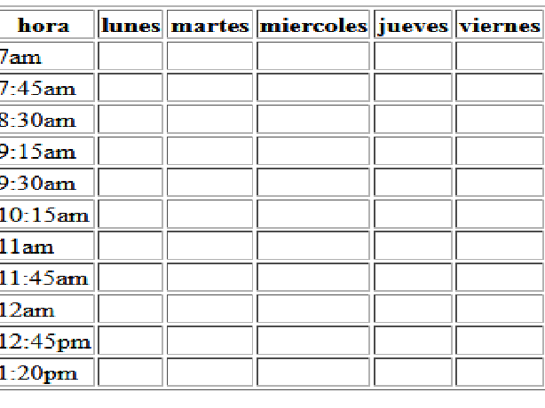septima pagina web: aprendimos a insertar imagenes y modificar su tamaño
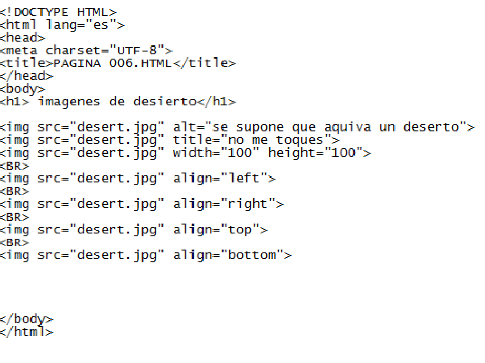 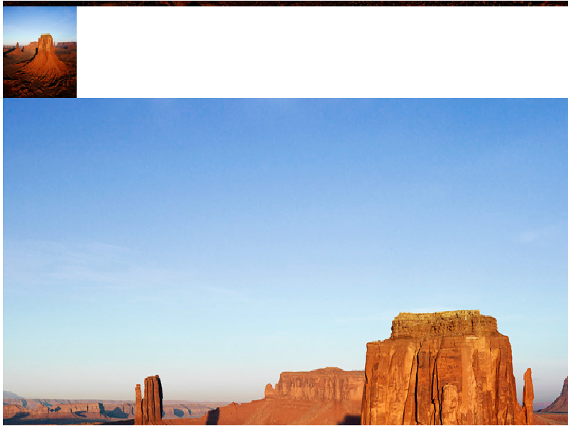octava pagina web: aprendimos a insertar datos en una pagina web por medio de un formulario
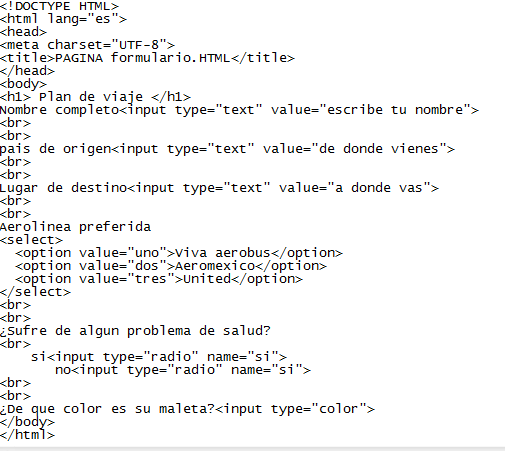 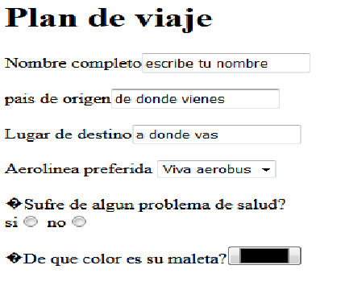